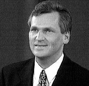

Faktaservice nr. 5 95/96, DESEMBER 1995
PRESIDENTVALGET I POLEN:
Kwasniewski overtar makten
Polen er rammet av et politisk sjokk. Lech Walesas tap for eks-kommunisten Kwasniewski får likevel mindre betydning for landet, tror mange.

Aleksander Kwasniewski.Valgdeltagelsen på rundt 68 prosent forteller at presidentvalget ble oppfattet som viktig av polske velgere. På forhånd trodde mange observatører at bare rundt halvparten av landets 28,5 millioner velgere skulle møte frem i valglokalene.
Aleksander Kwasniewski endte på 51,7 prosent av stemmene, som betyr at han fikk støtte fra nærmere 650 000 flere velgere enn Lech Walesa.
Ønsker EU-medlemskap
Presidentvalget har preget dagliglivet i Polen i mindre grad denne gang enn for fem år siden, da valgplakatene og arrangementene dominerte hverdagslivet. Avisenes kommentatorer tror at Polens vei til medlemskap i EU og NATO blir mindre påvirket av at Kwasniewski har slått Walesa i presidentvalget.Begge presidentkandidatene har understreket at Polen må arbeide for å bli i stand til å bli medlem av EU. Landets økonomiske vekst blir i år på minst 5,5 prosent av brutto nasjonalprodukt. De første reaksjonene fra det spirende aksjemarkedet tyder på at Kwasniewskis seier ikke vil legge en demper på investeringen i Polen. Kursene gikk opp etter at resultatet av presidentvalget ble kjent.
15 prosent arbeidsledighet
De utenlandske investeringene i Polen vil neppe bli særlig påvirket av valget. Kwasniewskis popularitet vil imidlertid bli sterkt påvirket av utviklingen i arbeidsledigheten, som for tiden ligger rundt 15 prosent av den yrkesaktive befolkningen.Den 41 år gamle tidligere kommunisten har tegnet et nokså rosenrødt bilde av Polens utvikling. Hvis venstrealliansen SLD - som Kwasniewski har ledet - ikke får redusert massearbeidsløsheten, vil velgerne trolig vende ryggen til partiet som nå har makten både i presidentpalasset, regjeringskontorene og parlamentet.
Etter valget er det mange observatører som klandrer Walesas lederstil for tapet som han ble påført under valget. Han har støtt mange politiske medarbeidere fra seg, inkludert ledere som Jacek Kuron, som var en av Walesas støttespillere i perioden da han var leder for fagbevegelsen Solidaritet.
Politisk bløffmaker?
Aleksander Kwasniewski hadde vært medlem i det polske kommunistpartiet i 13 år, da det ble oppløst i 1990. I motsetning til mange av sine unge kamerater lot han være å melde seg ut av partiet i 1981, da regimet innførte militær unntakstilstand for å knuse Lech Walesas Solidaritet. Mot slutten av regimets levetid var han med i regjeringen som idrettsminister. «La oss velge fremtiden» var Aleksander Kwasniewskis slagord på mange valgplakater ved årets valg. Ved å endre et par bokstaver med tusjpenn fikk motstanderne det til å lyde: «La oss hvitvaske fortiden».Kwasniewskis utfordring blir å styre Polen klar av de mange politiske korrupsjonssakene som har dukket opp i det politiske liv de siste månedene. Den nyvalgte presidenten er selv kommet i søkelyset fordi det er blitt kjent at han ikke har tatt eksamen i den videregående skolen, slik han og hans medarbeidere har hevdet. Dessuten har Kwasniewskis ektefelle foretatt fordelaktige aksjekjøp som først er blitt kjent i denne valgkampen.
Seieren til Kwasniewski innebærer at både presidentstillingen, regjeringen og nasjonalforsamlingen nå vil bli kontrollert av tidligere kommunister.
Kilde: NTB og Ulf Peter Hellstrøm, Aftenposten
[Innhold] [Info] [Aftenposten hjemmeside] [Til Fakta hovedside]